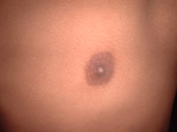
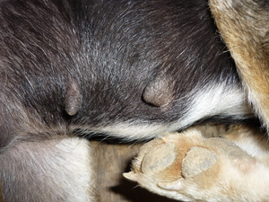
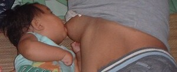

susu   
/susu/
n.
“breast”
1.
n.
breast
Wrd.Gloss: breast
Ka seini ne lalag iyan sika se daruwa ne egkumbetul kayi te kumeng ta, emun ke malitan iyan sika se egpasupsupan te me batè ne anak te sabeka ne malitan.
Due pangeteb te susu ku.
My breast has a tattoo.
Eng. breast
Tag. súso
Ilo.: susu
OCM: Ethnoanatomy (826)
DDP: Torso (2.1.2)
Online dict status: -
Usage level: B
2.
vi.
for the young (egsusu, migsusu/insusu, susu, agent, eg><ø-) to nurse at the breast or bottle
Egsinehew ka batè ke egkatanud ne egsusu.
Eng. nurse; suckle; suck
Tag. sumuso
Ilo.: agpasúsu
OCM: Infant Feeding (853)
Online dict status: -
Usage level: B
3.
v.
(igpasusu, ingpasusu, igpA-) to nurse a baby
Igpasusu ku pad ka batè te sumbaley ney ne eglitan degma su warè pad miglepew ka iney rin ne egpangali te kasilè.
Eng. breastfeed; nurse; feed
Tag. magpasúso ng bátà
Ceb. magpasuso
OCM: Infant Feeding (853)
Online dict status: -
Usage level: B
v.
for a child (pasusuwen, pA–en) to drink from its mother
Pasusuwen le pad ka batè human eggipanew.
Eng. drink from mother
Online dict status: -
Usage level: B
v.
(egsusu_te_kemel, migsusu/insusu, susu, eg><ø-) to suck one's thumb or finger
Egsusu te kemel ka anaken ku ke eglipereng su iyan din nalayaman.
Eng. suck thumb
Online dict status: -
Usage level: B
Updated by: RJH,QDL,AAA,QDL,NJK,RAA,RJH
Last updated: 21/Dec/2011
"egkasusu" in text "Childbirth"
"pasusuwen" in healthbook "Mania teg pakapatey kag iindes?"
"pasusu" in healthbook "Mania teg pakapatey kag iindes?"
"migpasusu" in healthbook "Mania teg pakapatey kag iindes?"
This page last updated: 19/May/2012
Copyright © 2009-2010, Matigsalug Language Christian Association, Inc